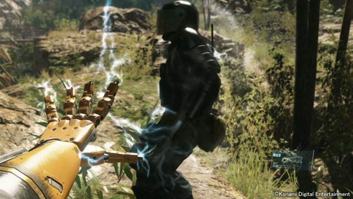

The Metal Gear series has always delivered complex plots, with unexpected twists and revelations altering your perception of people and events you thought you understood. Though Metal Gear Solid V: The Phantom Pain continues this tradition, the majority of its plot focuses on the events at hand. Fans of the series will find their diligence rewarded in ways that newcomers can't begin to imagine, but such loyalty and knowledge isn't a prerequisite. Top-notch cinematography and voice acting echo--and at times exceed--contemporary standards for film and TV, carrying extraordinary characters into the realm of believability. Though you will cross a few elements in the world that illicit a chuckle, there's very little humour in The Phantom Pain's story; the dark themes and subject matter like disenfranchised youth being forced into combat call for a serious tone, after all. The gravity of the game's encounters leaves you on the edge of your seat, with a racing pulse.
As Big Boss, the leader of a private military group The Diamond Dogs, you go behind enemy lines to carry out recon and assassination contracts, as well as infiltrate the hideouts of your enemies. These include world powers and military leaders, many of whom work in the shadows. The Phantom Pain mixes historical events from the 1980s with a pinch of James Bond villainy and an exciting dollop of sci-fi dressing. There are times when it feels grounded in reality, but there are also just as many moments when it goes off the deep-end to great effect. Impossible technology and super-human abilities accompany almost every beat of the story. These oddities surprise you and instill wonder in the crazy, mixed-up world that you're meant to save.
Metal Gear Solid V: Ground Zeroes gave us a taste of the series' new mechanics, which feel as excellent now as they did then, but the freedom of choice in Ground Zeroes pales in comparison to the possibilities that await you in The Phantom Pain. Instead of roaming around a small base as in Ground Zeroes, you have the freedom to explore entire countryside. You crawl, walk, and sprint to and fro, and each action feels spot on thanks to responsive controls that shed the stiff nature that plagued some of the earlier games in the series. You can even learn to climb up cliff faces, instilling a refreshing sense of verticality. You don't always have to sneak, and in some cases, you must attack head-on. Both types of scenarios instill a nerve-wracking sense of tension that either gives way to crushing defeat, or a resounding sense of victory.
You also have the opportunity to react on the fly in numerous ways when spotted by an enemy. The game's Reflex systems gives you a momentary advantage as time slows down, allowing you to pinpoint the perfect head shot. If you're quick enough, you can dive out of your enemy's sightline, roll onto your back, and fire from the ground, all before alerting others in the vicinity. If you want something really challenging, this can be disabled at any time. The Phantom Pain encourages you to be active, but you have more than enough tools to tip the scales in your favour. If you think all is lost, you can also call in an airstrike, though it's only suitable for some missions and will limit your ranking at the end of the mission, and thus the rewards you receive.
One mission in particular put all of my skills and tools to use, and stands out as a perfect example of how playing The Phantom Pain is such an engrossing and varied experience. While searching for a secret weapon developed by the US government, I had to infiltrate a series of caves in the Afghan countryside. The problem: there's a heavily guarded area in front of the caves. Even worse: the caves are like a maze that's nearly impossible to navigate logically. In order to acquire the weapon, I had to sneak through the shadows, creep up to soldiers and incapacitate them one by one, without alerting guards near the mouth of the cave. They held a prisoner who knew where the weapon was hidden. Throwing empty bullet cartridges to distract them, I choked out the guard in the rear, and then followed suit to his friend in the front. The prisoner spoke the local tongue, but because I had previously captured an interpreter who was listening over my radio, I was able to understand his instructions. I then searched the caves, inch by inch, taking out threats until I found the weapon. Afterwards, I charged out, hoping for freedom, but I was confronted by never-before-seen enemies that couldn't be taken down with conventional weaponry. I was initially ordered not to use the weapon by the person who gave me the contract, but I had no choice but to blast my way out while I ran to freedom. It was an exhilarating mission that I won't soon forget as it took every ounce of skill I had to move in undetected, and then it bombarded me with a full-on action sequence that fueled a massive rush of adrenaline. Thankfully, there are plenty like it to go around.

Your tools, though optional, are so varied and interesting that you'll want to explore them out of curiosity, if not necessity. You have a prosthetic arm, for example, that can be configured in multiple ways. Consider the Sonar upgrade, which allows you to punch the ground, sending out a shockwave that pinpoints nearby enemies for a short period of time. You also have numerous weapons to choose from, which have slight variations that make subtle but important differences. If you prefer low recoil in your machine gun, there's an option for that, but you may want to consider the grenade launcher attachment, because you never know when a tank might roll into battle.
Your mission in The Phantom Pain is twofold: build a military force free from the whims of narrow-minded world powers, and destroy those who wish to take advantage of fractured global politics for their own selfish ideals. There are numerous sub-plots within, and during your long and extensive journey, you face topics rarely seen in gaming: torture, child soldiers, and the human cost of nuclear proliferation. The Phantom Pain depicts such subject-matter head-on but presents them with unveiled brutality, reminding you that any order we know today came at the cost of someone else's freedom and happiness.
The Phantom Pain's story missions are enthralling, and carry you forward at an even pace for most of the game, but over 100 side-operations also vie for your attention. There's so much to do that I often wondered if I'd ever complete it all, but at the same time, I was pleased to know that the open-world always had more for me to do beyond the main story missions. It's a game that lavishes in tugging your attention in multiple directions, but as you mull over which prescribed missions to undertake, you more often than not find emergent scenarios that serve as the third pillar of The Phantom Pain's open-world gameplay experience. Both Africa and Afghanistan are replete with small military outposts, massive compounds, and threats from nature--all opportunities for action and reward. An outpost may contain a vehicle worth stealing, or a soldier that will provide useful information if you can quietly detain and interrogate him.
Success in The Phantom Pain isn't just measured by getting from point A to point B, or by defeating a notorious bad guy. Remember, you're trying to build a private army. While convincing enemy troops to join your ranks would require expert coercion in the real world, in The Phantom Pain, you simply attach a balloon to your new friend's waist, and they float into the arms of an awaiting chopper. It's a ridiculous concept, but one that is satisfying because it feeds into Big Boss's goal of expansion and provides the player with more resources and, thus, tools and options to work with. Of course, dead soldiers aren't good to anybody, so you're motivated to tread carefully--and quietly-- to incapacitate your enemies without raising alarm in order to capture your prey alive. Moving undetected has forever been a pillar of the Metal Gear series, but it feels far tenser in the wild, open-world of The Phantom Pain, where a hungry coyote can upset your mission just as easily as an unseen enemy. Unlike previous Metal Gear games, many of which placed players in enclosed spaces, a threat can come from miles away and appear next to you when you least expect it. Nothing is confined, and no place is safe.
All of your hard work capturing soldiers, in addition to resources, wildlife, and vehicles, pays off back at Mother Base, your offshore sanctum. Here, soldiers you've captured can be assigned to different research fields. It's important to organize them properly because soldiers excel in different pursuits, and their skills allow you to unlock new weapons and technology for you and Mother Base. As you add soldiers to different research factions, their ability points add up, and you earn new levels of proficiency in those fields. Once your team hits certain levels and you possess the right amount of materials that you source from the field, you then earn the right to develop new equipment. There are dozens of items and pieces of equipment to unlock, and you may spend upwards of 100 hours searching for top-notch recruits and gathering resources while infiltrating enemy bases if you hope to unlock them all, but you can also narrow your focus to items that suit your particular play style if you prefer to sneak--rather than blast--your way behind enemy lines. Ultimately, you could also play with the bare minimum, but your job is easier and more varied when you carry new technology and abilities into battle. The bigger the base, the more soldiers you can support, and the faster you can move development forward, so it's a relief that the resource recovery system is integrated so seamlessly into The Phantom Pain. At one point, you can even send troops out on missions to fulfil contracts and gather resources, allowing you to focus on the more important tasks at hand.
You watch Mother Base expand over the course of the game, from a single platform to a collection of platforms, connected by bridges that take over a minute to cross by car. There are some minor activities to engage in while on base, but being there feels like home, free from the threats that surround you during missions. Staring out over the ocean gives you a moment of solace from the horrible events that surround you on the battlefield, and you get a similar feeling when riding into battle, seated on the edge of a chopper. With the camera behind Big Boss, creating a strong silhouette against the outside world, you experience something you're rarely afforded in video games, self-reflection.
Once on land, deep thoughts take a backseat as you charge into battle. You often need to cover large tracts of land to get to your objective, and while running on foot is surprisingly enjoyable, with the sound of swishing fabric and pounding footsteps lending credence to your virtual trek, you eventually earn the right to call in a transport, be it a horse, a truck, or even a small robotic Walker, which is as charming and expressive as R2-D2 from Star Wars. The Walker and your horse are known as Buddies, and for the majority of missions, you can take one with you. Buddies aren't limited to transportation assistants, either. If you play your cards right, you can also take a dog into battle that will sniff out and distract enemies. Later on, you have the option to acquire a human companion, who ultimately becomes the most useful sidekick of the bunch thanks to their unrivalled sneakiness. Metal Gear has always been about fighting solo, but one of the reasons The Phantom Pain excels is because it bucks that trend. The new open world and the Buddy system add welcome layers of depth that ultimately set The Phantom Pain's gameplay apart from other games in the series.
It's difficult to separate The Phantom Pain from its legacy, because the story here precedes the very first game in the series, 1987's Metal Gear. Metal Gear games never come in sequence, either, so while this is a pseudo prequel to the original game, it's also the missing chapter in the middle of the entire timeline. We know what's come before, and we know what happens after, but the middle, where Big Boss undergoes an important transformation, has been a mystery until now. Though The Phantom Pain's story is impressive enough to enjoy on its own, when linked to other games in the series its importance is elevated for fans who have followed the journey for the last three decades. It delivers on its promise, revealing how Big Boss came to be the man many people know him to be, but the path is one nobody could have seen coming. Getting to this part of the story takes time, and requires patience. In the lead up to the finale, you need to spend an hour or two replaying older missions on a higher difficulty setting in order to unlock the last story missions. This is the only aspect of The Phantom Pain that feels off. The gameplay is near impeccable, and the story and characters are captivating, making for an experience that's unlike any other game I've played, but this part of the Phantom Pain felt mundane.
Fortunately, that moment is fleeting. The Phantom Pain's final strokes cast deep, dark shadows over the world. Woe and despair fill your heart, but you can't look away and you must act. Your actions don't align with your desires, but your hands are tied. For anyone just joining the tale of Big Boss with The Phantom Pain, the conclusion of these events will leave you with plenty to think about. The thing you tried the hardest to fight ultimately proved to be in effect the whole time, and the relationships you made and fought for along the way are impacted as a result, including your relationship with your identity as a military leader. Everything is questionable, and nothing is as it seems. For fans of the series, the ultimate payoff is one that answers questions, but also one that raises unforeseen implications.
After dozens of hours sneaking in the dirt, choking out enemies in silence, and bantering with madmen who wish to cleanse the world, The Phantom Pain delivers an impactful finale befitting the journey that preceded it. It punches you in the gut and tears open your heart. The high-calibre cut scenes, filled with breath-taking shots and rousing speeches, tease you along the way. Your fight in the vast, beautiful, and dangerous open world gives you a sense of purpose. The story is dished out in morsels, so you'll have to work for the full meal, but it's hard to call it "work" when controlling Big Boss feels so good, with so many possibilities at your fingertips.
Every fan of Metal Gear has their favourite game in the series. For some, it's the unique gameplay quirks, memorable set pieces, or specific plot points that dictate their adoration for one game over another. When defining the best Metal Gear game, things get trickier, but with The Phantom Pain, that problem is finally resolved. There has never been a game in the series with such depth to its gameplay, or so much volume in content. The best elements from the past games are here, and the new open-world gameplay adds more to love on top. When it comes to storytelling, there has never been a Metal Gear game that's so consistent in tone, daring in subject matter, and so captivating in presentation. The Phantom Pain may be a contender for one of the best action games ever made, but is undoubtedly the best Metal Gear game there is.